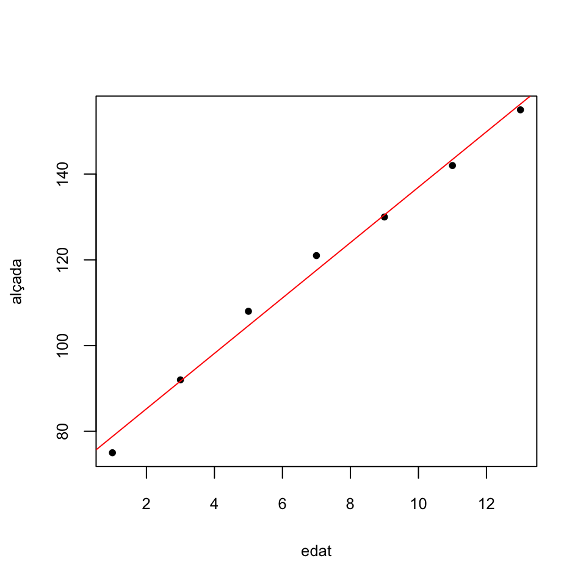
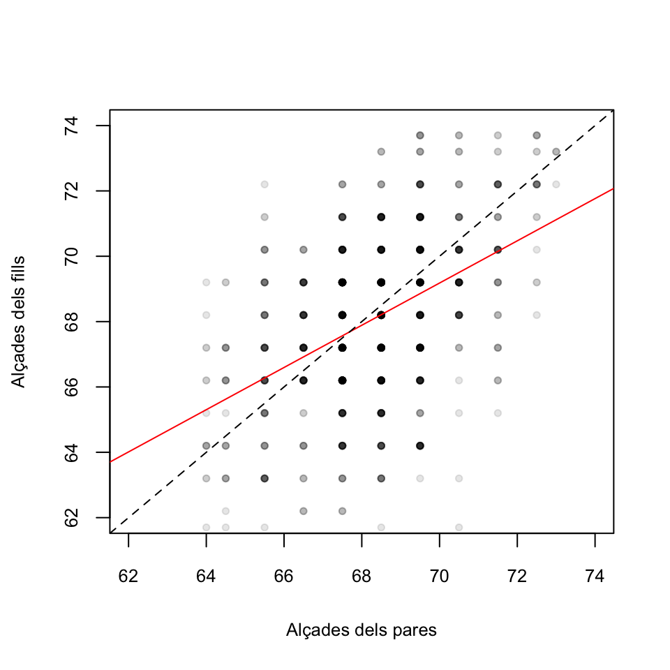
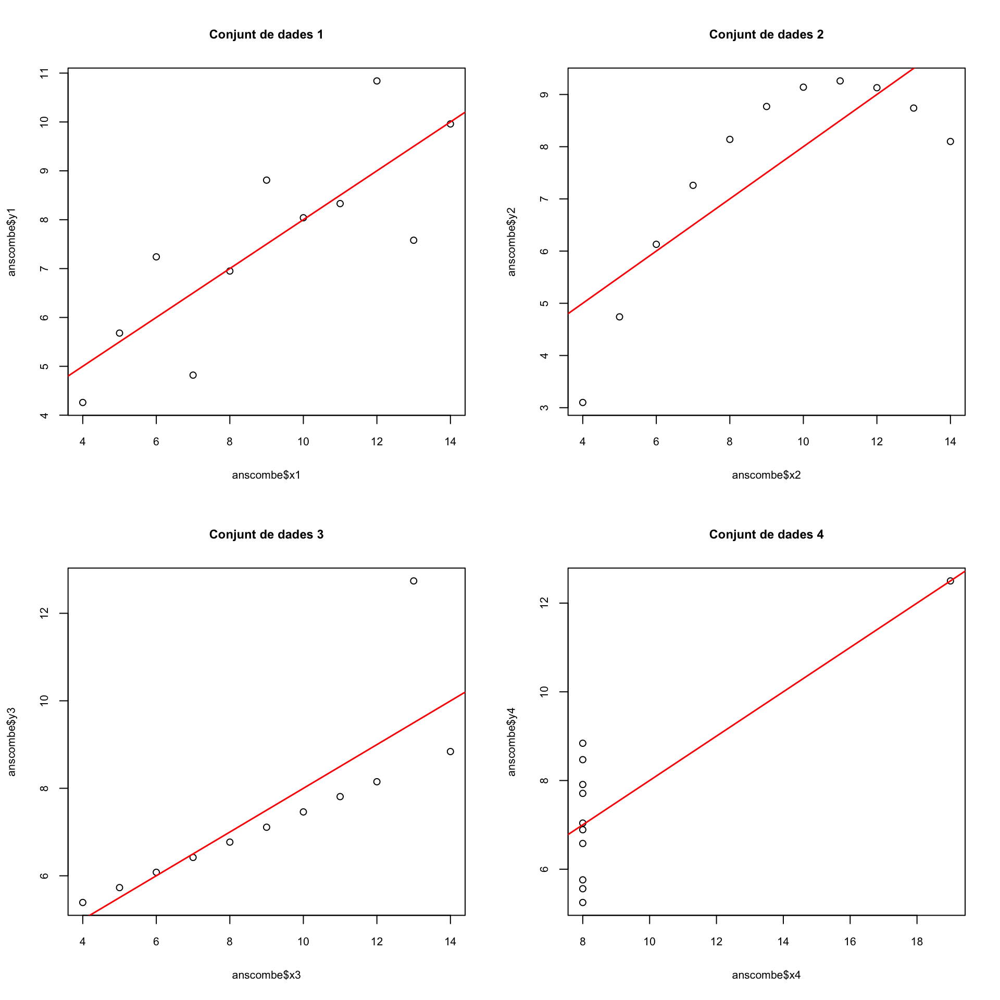
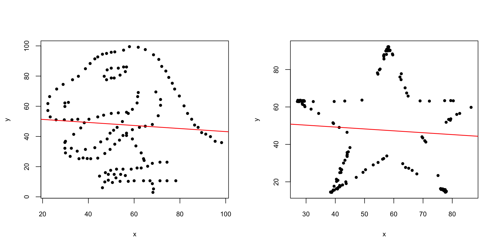

Tema 10 Regressió lineal
Comencem recordant un exemple de Matemàtiques I.
Exemple 10.1 La taula següent dóna l’alçada mitjana (en cm) dels nins a determinades edats (en anys):
| edat | alçada |
|---|---|
| 1 | 75 |
| 3 | 92 |
| 5 | 108 |
| 7 | 121 |
| 9 | 130 |
| 11 | 142 |
| 13 | 155 |
A Matemàtiques I aprenguéreu a calcular amb R la “millor” relació lineal \[ \text{alçada}= b_0+b_1\cdot\text{edat} \] de la manera següent:
##
## Call:
## lm(formula = alçada ~ edat)
##
## Coefficients:
## (Intercept) edat
## 72.321 6.464Obteníeu d’aquesta manera la recta \[ \text{alçada}=72.321+6.464x \] i la representàveu amb:

Ara podíem emprar aquesta recta per estimar l’alçada d’un nin d’una edat concreta. Per exemple, esimam que l’alçada d’un nin de 10 anys és \[ 72.321+6.464\cdot 10=136.964, \] uns 137 cm.
En aquest tema estudiarem com es calcula aquella recta, què vol dir que sigui “la millor recta” que explica l’alçada dels nins en funció de l’edat, com trobar intervals de confiança per a les estimacions associades a aquesta recta i com tractar el problema més general de trobar “la millor funció lineal” que explica una variable \(Y\) en funció de diverses variables \(X_1,\ldots,X_k\).
10.1 Regressió lineal simple
El problema plantejat a l’Exemple 10.1 és una instància de la situació general en la qual tenim parelles d’observacions de dues variables \(X\) i \(Y\) sobre una mostra de subjectes, \[ (x_i,y_i)_{i=1,2,\ldots,n}, \] i volem estudiar com depèn el valor de la variable \(Y\) del de \(X\). En aquest context:
La variable \(X\) l’anomenam la variable de control o independent
La variable \(Y\) l’anomenam la variable de resposta o dependent
En general, volem trobar la millor relació funcional (el millor model estadístic, amb la terminologia introduïda en el tema anterior) que expliqui la variable \(Y\) en funció de la variable \(X\). En aquest tema, cercarem un model lineal. Les tècniques que es fan servir per resoldre aquest problema s’anomenen genèricament de regressió lineal. Nosaltres n’estudiarem una de concreta: la regressió lineal per mínims quadrats.

10.1.1 El model
En el model de regressió lineal suposam que existeixen \(\beta_0,\beta_1\in \mathbb{R}\) tals que \[ \mu_{Y|x}=\beta_0+\beta_1 x \] on \(\mu_{Y|x}\) és el valor esperat de \(Y\) sobre els subjectes per als quals \(X\) val \(x\). Volem estimar aquests paràmetres \(\beta_0\) (el terme independent del model) i \(\beta_1\) (la pendent del model) a partir d’una mostra.
Recordau la interpretació d’una funció lineal \(y=a_0+a_1x\):
El terme independent \(a_0\) és el valor de \(y\) quan \(x=0\)
La pendent \(a_1\) és la variació de \(y\) quan \(x\) augmenta en 1 unitat
Per tant, en el nostre model de regressió lineal:
\(\beta_0\) és el valor esperat de \(Y\) en els subjectes en els quals \(X\) val 0
- \(\beta_1\) és la variació del valor esperat de \(Y\) quan el valor de \(X\) augmenta 1 unitat
Amb una mostra \((x_i,y_i)_{i=1,2,\ldots,n}\), calcularem estimacions \(b_0\) i \(b_1\) de \(\beta_0\) i de \(\beta_1\). Això ens donarà la recta de regressió per a la nostra mostra: \[ \widehat{Y}=b_0+b_1 X. \] Aquesta recta, donat un valor \(x_0\) de \(X\), permet estimar el valor \(\widehat{y}_0=b_0+b_1 x_0\) de \(Y\) sobre un subjecte en el qual \(X\) valgui \(x_0\). Hi empram \(\widehat{Y}\) a la dreta per posar èmfasi que no és que \(Y\) sigui \(b_0+b_1X\), sinó que això darrer estima el valor de \(Y\) a partir del valor de \(X\). En concret, si \(\widehat{y}_0=b_0+b_1 x_0\), direm a \(\widehat{y}_0\) el valor estimat de \(Y\) quan \(X=x_0\).
Fixau-vos que, d’aquesta manera, donada una observació \((x_i,y_i)\) de la nostra mostra, distingim entre
\(y_i\): el valor de \(Y\) sobre l’individu corresponent
- \(\widehat{y}_i=b_0+b_1 x_i\): l’estimació del valor de \(Y\) sobre l’individu corresponent a partir del seu valor de \(X\) i la recta de regressió obtinguda
El model anterior el reescrivim com a \[ Y|x=\mu_{Y|x}+ E_x=\beta_0+\beta_1 x+ E_x \] on
\(Y|x\) és la variable aleatòria “valor de \(Y\) quan \(X\) val \(x\)”: Prenem un subjecte en el qual \(X\) val \(x\) i hi mesuram \(Y\)
\(\mu_{Y|x}\) és el valor esperat de \(Y|x\)
\(E_x=Y|x -\mu_{Y|x}\) és la variable aleatòria error o residu, que dóna la diferència entre el valor de \(Y\) en un individu amb \(X=x\) i el seu valor esperat
Prenent valors esperats als dos costats de la igualtat \(Y|x=\mu_{Y|x}+ E_x\) obtenim que \(\mu_{Y|x}=\mu_{Y|x}+ \mu_{E_x}\) i per tant que \(\mu_{E_x}=0\). Així doncs, aquest model implica que els valors esperats de les variables error \(E_x\) són tots 0.
10.1.2 Mínims quadrats
Si estimam que \(\beta_0\) i \(\beta_1\) valen \(b_0\) i \(b_1\), l’error que cometem amb l’estimació \(\widehat{y}_i=b_0+b_1x_i\) a cada observació \((x_i,y_i)\) de la mostra és \[ e_i=y_i-\widehat{y}_i=y_i-(b_0+b_1 x_i) \]
La Suma dels Quadrats dels Errors d’aquesta estimació és \[ SS_E=\sum_{i=1}^n e_i^2=\sum_{i=1}^n (y_i-b_0-b_1 x_i)^2 \] A la regressió lineal per mínims quadrats, s’estimen \(\beta_0\) i \(\beta_1\) per mitjà dels valors de \(b_0\) i \(b_1\) que minimitzen aquesta \(SS_E\). Aquests valors són donats pel resultat següent:
Per trobar-los, empram que els valors de \(b_0,b_1\) que fan mínim \[ SS_E=\sum_{i=1}^n (y_i-b_0-b_1 x_i)^2 \] anul·len les derivades de \(SS_E\) respecte de \(b_0\) i \(b_1\).
Derivem: \[ \begin{array}{l} \displaystyle\dfrac{\partial SS_E}{\partial b_0}=-2\sum\limits_{i=1}^n (y_i -b_0-b_1 x_i)\\[2ex] \displaystyle\dfrac{\partial SS_E}{\partial b_1}=-2\sum\limits_{i=1}^n (y_i -b_0-b_1 x_i) x_i \end{array} \] El \((b_0,b_1)\) que cercam satisfà \[ \begin{array}{l} \displaystyle 2\sum\limits_{i=1}^n (y_i -b_0-b_1 x_i)=0\\[2ex] \displaystyle 2\sum\limits_{i=1}^n (y_i -b_0-b_1 x_i) x_i =0 \end{array} \] Ho reescrivim: \[ \begin{array}{rl} \displaystyle n b_0 + \Big(\sum\limits_{i=1}^n x_i\Big) b_1 & =\sum\limits_{i=1}^n y_i\\[1ex] \displaystyle \Big(\sum\limits_{i=1}^n x_i\Big) b_0 + \Big(\sum\limits_{i=1}^n x_i^2\Big) b_1 &=\sum\limits_{i=1}^n x_iy_i \end{array} \] Les solucions són \[ \begin{array}{rl} b_1& \displaystyle=\frac{n \sum\limits_{i=1}^n x_i y_i-\sum\limits_{i=1}^n x_i\sum\limits_{i=1}^n y_i} {n\sum\limits_{i=1}^n x_i^2-\big(\sum\limits_{i=1}^n x_i\big)^2}\\[6ex] b_0& \displaystyle=\frac{\sum\limits_{i=1}^n y_i -b_1 \sum\limits_{i=1}^n x_i}{n} \end{array} \] i es pot comprovar que donen el mínim de \(SS_E\).
Ara, recordant que \[ \begin{array}{l} \displaystyle\overline{x}=\frac{1}{n}\sum\limits_{i=1}^n x_i, \quad \overline{y}=\frac{1}{n} \sum\limits_{i=1}^n y_i\\[2ex] \displaystyle s_x^2 =\frac{1}{n}\Big(\sum_{i=1}^n x_i^2\Big) -\overline{x}^2,\quad \displaystyle s_y^2 =\frac{1}{n}\Big(\sum_{i=1}^n y_i^2\Big) -\overline{y}^2\\[2ex] \displaystyle s_{xy} =\frac{1}{n}\Big(\sum_{i=1}^n x_i y_i\Big)-\overline{x}\cdot\overline{y} \end{array} \] s’obté que finalment que \[ b_1 =\frac{{s}_{xy}}{{s}_x^2},\quad b_0 = \overline{y}-b_1 \overline{x} \]La igualtat \[ \frac{{s}_{xy}}{{s}_x^2}=\frac{\widetilde{s}_{xy}}{\widetilde{s}_x^2} \] és conseqüència que, a les dues fraccions, els denominadors del numerador i el denominador se cancel·len: \[ \frac{{s}_{xy}}{{s}_x^2}=\frac{\frac{\sum_{i=1}^n (x_i-\overline{x})(y_i-\overline{y})}{n}}{\frac{\sum_{i=1}^n (x_i-\overline{x})^2}{n}}=\frac{{\sum_{i=1}^n (x_i-\overline{x})(y_i-\overline{y})}}{{\sum_{i=1}^n (x_i-\overline{x})^2}}=\frac{\frac{\sum_{i=1}^n (x_i-\overline{x})(y_i-\overline{y})}{n-1}}{\frac{\sum_{i=1}^n (x_i-\overline{x})^2}{n-1}}= \frac{\widetilde{s}_{xy}}{\widetilde{s}_x^2} \]
Aquests \(b_0\) i \(b_1\) són els que calcula la funció lm.
Exemple 10.2 Calculem la recta de regressió per mínims quadrats de les edats i alçades de l’Exemple 10.1, que eren
| edat | alçada |
|---|---|
| 1 | 75 |
| 3 | 92 |
| 5 | 108 |
| 7 | 121 |
| 9 | 130 |
| 11 | 142 |
| 13 | 155 |
Comencem calculant els estadístics que ens calen per calcular els coeficents \(b_0\) i \(b_1\) (i la variància de les alçades, que per calcular-los no ens fa falta però més tard sí que la necessitarem):
edat=c(1,3,5, 7, 9, 11, 13)
alçada=c(75, 92, 108, 121, 130 , 142, 155)
x.b=mean(edat)
y.b=mean(alçada)
s2.x=var(edat)
s2.y=var(alçada)
s.xy=cov(edat,alçada)
round(c(x.b,y.b,s2.x,s2.y,s.xy),3)## [1] 7.000 117.571 18.667 786.952 120.667Obtenim
\[
\begin{array}{cccccccc}
\overline{x} & \overline{y} & \widetilde{s}_x^2 & \widetilde{s}_y^2 & \widetilde{s}_{xy}\\ \hline
7 & 117.571 & 18.667 & 786.952 & 120.667
\end{array}
\]
Aleshores
\[
\begin{array}{l}
\displaystyle b_1 =\frac{\widetilde{s}_{xy}}{\widetilde{s}_x^2}=\frac{120.667}{18.667}=6.464\\[2ex]
\displaystyle b_0 = \overline{y}-b_1 \overline{x} =117.571-6.464\cdot 7=72.321
\end{array}
\]
Obtenim la recta de regressió
\[
\widehat{Y}=72.321+6.464 X
\]
que coincideix amb la recta que calcula lm:
##
## Call:
## lm(formula = alçada ~ edat)
##
## Coefficients:
## (Intercept) edat
## 72.321 6.464Recordau que els coeficients \(b_0,b_1\) d’aquesta recta s’obtenen, respectivament, afegint els sufixos $coefficients[1] i $coefficients[2] al resultat de la funció lm.
## (Intercept)
## 72.32143## edat
## 6.464286Segons aquesta estimació, l’alçada mitjana dels nins augmenta 6.46 cm anuals, partint d’una alçada mitjana de 72.3 cm en néixer.
Exemple 10.3 En un experiment on es volia estudiar l’associació entre el consum de sal i la tensió arterial, a alguns individus se’ls assignà aleatòriament una quantitat diària constant de sal en la seva dieta, i al cap d’un mes se’ls mesurà la tensió mitjana. Alguns resultats varen ser els següents:
| X (sal, en g) | Y (pressió, en mm de Hg) |
|---|---|
| 1.8 | 100 |
| 2.2 | 98 |
| 3.5 | 110 |
| 4.0 | 110 |
| 4.3 | 112 |
| 5.0 | 120 |
Volem trobar la recta de regressió lineal per mínims quadrats de \(Y\) en funció de \(X\) a partir d’aquesta mostra.
Calculem els estadístics que necessitam:
sal=c(1.8, 2.2,3.5,4.0,4.3,5.0)
tensió=c(100,98,110,110,112,120)
x.b=mean(sal)
y.b=mean(tensió)
s2.x=var(sal)
s2.y=var(tensió)
s.xy=cov(sal,tensió)
round(c(x.b,y.b,s2.x,s2.y,s.xy),3)## [1] 3.467 108.333 1.543 66.267 9.773\[ \begin{array}{ccccc} \overline{x} & \overline{y} & \widetilde{s}_x^2 & \widetilde{s}_y^2 & \widetilde{s}_{xy}\\ \hline 3.467 & 108.333 & 1.543 & 66.267 & 9.773 \end{array} \]
Per tant els coeficients de la recta de regressió lineal per mínims quadrats de \(Y\) (la tensió) en funció de \(X\) (la quantitat de sal) són
## [1] 86.371 6.335Obtenim la recta \[ \widehat{Y}= 86.371+6.335 X \] Segons aquest model, l’augment de 1 g de sal consumida implica un augment mitjà de 6.3 mm Hg de pressió arterial. Amb aquest model, estimam que la tensió d’una persona que consumeix 3 g diaris de sal és \[ 86.371+6.335 \cdot 3=105.377\text{ mm Hg} \]
Comprovem que aquesta és la recta que obtenim amb la funció lm:
## (Intercept) sal
## 86.37079 6.33535Galton del paquet HistData.
## 'data.frame': 928 obs. of 2 variables:
## $ parent: num 70.5 68.5 65.5 64.5 64 67.5 67.5 67.5 66.5 66.5 ...
## $ child : num 61.7 61.7 61.7 61.7 61.7 62.2 62.2 62.2 62.2 62.2 ...Cada filera del dataframe correspon a un adult: la variable child dóna la seva alçada i la variable parent la mitjana de les alçades dels seus pares, totes dues en polzades (recordau que 1 polzada són 2.54 cm). Calculem a mà i amb R la recta de regressió de la variable de reposta child en funció de la variable de control parent:
x.b=mean(Galton$parent)
y.b=mean(Galton$child)
s2.x=var(Galton$parent)
s2.y=var(Galton$child)
s.xy=cov(Galton$parent,Galton$child)
round(c(x.b,y.b,s2.x,s2.y,s.xy),3)## [1] 68.308 68.088 3.195 6.340 2.065\[ \begin{array}{ccccc} \overline{x} & \overline{y} & \widetilde{s}_x^2 & \widetilde{s}_y^2 & \widetilde{s}_{xy}\\ \hline 68.308 & 68.088 & 3.195 & 6.34 & 2.065 \end{array} \]
Per tant els coeficients de la recta de regressió lineal per mínims quadrats de \(Y\) (l’alçada dels fills) en funció de \(X\) (la mitjana de les alçades dels pares) són
## [1] 23.942 0.646Obtenim la recta \[ \widehat{Y}= 23.942+0.646 X \] Segons aquest model, l’augment de 1 polzada (2.54 cm) en l’alçada mitjana dels pares implica un augment esperat de 0.646 polzades (1.6 cm) de l’alçada del fill.
Amb la funció lm obtenim la mateixa recta. Observau la sintaxi per especificar-hi el dataframe
## (Intercept) parent
## 23.9415302 0.6462906El fet que la pendent d’aquesta recta sigui més petita que 1 és el que dóna l’efecte de “regressió a la mediocritat” que observà Galton. En efecte, calculem per a quines alçades mitjanes dels pares esperam que els fills siguin més baixos que ells. Si resolem la desigualtat “alçada dels pares més gran que l’alçada esperada dels fills” \[ X\geqslant\widehat{Y}= 23.942+0.646 X \] obtenim \[ X\geqslant\frac{23.942}{1-0.646}=67.69 \] i això ens diu que si l’alçada mitjana dels pares és més gran que 67.69 polzades, uns 1.72 m, esperam que els fills siguin més baixos que els pares, mentre que, pel contrari, si l’alçada mitjana dels pares està per davall dels 1.72 m, esperam que els fills siguin més alts que els pares.
Algunes de les propietats importants de la regressió per mínims quadrats són:
Tal i com hem calculat el terme independent \(b_0\), la recta de regressió passa pel punt mitjà \((\overline{x},\overline{y})\) de la mostra: \[ b_0+b_1 \overline{x}=\overline{y} \]
La mitjana dels valors estimats de la variable \(Y\) als nostres punts és igual a la mitjana dels valors observats: \[ \overline{\widehat{y}}=\frac{1}{n}\sum_{i=1}^n\widehat{y}_i =\frac{1}{n}\sum_{i=1}^n(b_0+b_1x_i)= b_0+b_1 \overline{x}=\overline{y} \]
Els errors \((e_i)_{i=1,\ldots,n}\) de la mostra tenen mitjana 0: \[ \begin{array}{l} \overline{e} & \displaystyle =\frac{1}{n}\sum_{i=1}^n e_i =\frac{1}{n}\sum_{i=1}^n (y_i-b_0-b_1x) =\frac{1}{n}\sum_{i=1}^n (y_i-\widehat{y}_i)\\[2ex] & \displaystyle =\frac{1}{n}\sum_{i=1}^n{y}_i-\frac{1}{n}\sum_{i=1}^n\widehat{y}_i= \overline{y}-\overline{\widehat{y}} =0 \end{array} \]
Els errors \((e_i)_{i=1,\ldots,n}\) de la mostra tenen variància \[ s_e^2=\frac{1}{n}\Big(\sum_{i=1}^{n} e^2_i\Big)-\overline{e}^2=\frac{\sum_{i=1}^{n} e^2_i}{n}=\frac{SS_E}{n} \] perquè \(\overline{e}=0\) (i recordau que hem dit a \(\sum_{i=1}^{n} e^2_i\) la Suma de Quadrats dels Errors,
\(SS_E\)).
El teorema següent recull les propietats de la regressió lineal per mínims quadrats com a tècnica d’estimació dels coeficients \(\beta_0\) i \(\beta_1\):
Teorema 10.2 Si les variables aleatòries error \(E_{x_i}\) tenen totes mitjana 0 i la mateixa variància \(\sigma^2_E\) i són, dues a dues, incorrelades, aleshores
\(b_0\) i \(b_1\) són els estimadors lineals no esbiaixats més eficients (òptims) de \(\beta_0\) i \(\beta_1\)
Un estimador no esbiaixat de \(\sigma_E^2\) és \[ S^2=\frac{SS_E}{n-2} \]
Si a més les variables aleatòries error \(E_{x_i}\) són totes normals, aleshores
- \(b_0\) i \(b_1\) són estimadors màxim versemblants de \(\beta_0\) i \(\beta_1\) (a més de no esbiaixats òptims).
Exemple 10.5 Si suposam a l’Exemple 10.1 que els errors tenen la mateixa variància i són incorrelats, podem estimar aquesta variància de la manera següent:
n=length(edat)
alçada.cap=b0.edat+b1.edat*edat #Els valors estimats
errors.edat=alçada-alçada.cap #Els errors
SS.E=sum(errors.edat^2) #La suma dels quadrats dels errors
S2.edat=SS.E/(n-2) #L'estimació de la variància
S2.edat## [1] 8.314286Tenim que \(S^2=8.314\), i estimam que \(\sigma_E^2\) val això.
Bé, fins ara hem explicat com s’estimen per mínims quadrats els coeficients \(\beta_0\) i \(\beta_1\) al model \[ \mu_{Y|x}=\beta_0+\beta_1 x \] però ens pot interessar més:
Com és de significativa l’estimació obtinguda?
Quin és l’error típic d’aquests estimadors?
Quins serien els intervals de confiança d’aquests coeficients per a un nivell de confiança donat?
Com obtenim un interval de confiança per al valor estimat de \(Y\) sobre un subjecte a partir del seu valor de \(X\)?
Amb la funció lm, R calcula molt més que els coeficients de la recta:
##
## Call:
## lm(formula = alçada ~ edat)
##
## Residuals:
## 1 2 3 4 5 6 7
## -3.7857 0.2857 3.3571 3.4286 -0.5000 -1.4286 -1.3571
##
## Coefficients:
## Estimate Std. Error t value Pr(>|t|)
## (Intercept) 72.3214 2.1966 32.92 4.86e-07 ***
## edat 6.4643 0.2725 23.73 2.48e-06 ***
## ---
## Signif. codes: 0 '***' 0.001 '**' 0.01 '*' 0.05 '.' 0.1 ' ' 1
##
## Residual standard error: 2.883 on 5 degrees of freedom
## Multiple R-squared: 0.9912, Adjusted R-squared: 0.9894
## F-statistic: 562.9 on 1 and 5 DF, p-value: 2.477e-06Anem a veure què és tot això que ens dóna R i per a què serveix.
D’entrada, pot ser útil saber que el vector Residuals (que s’obté amb el sufix $residuals) conté el vector dels errors \((e_i)_i\). Comprovem-ho amb les dades de l’Exemple 10.1.
## [1] -3.7857143 0.2857143 3.3571429 3.4285714 -0.5000000 -1.4285714 -1.3571429## 1 2 3 4 5 6 7
## -3.7857143 0.2857143 3.3571429 3.4285714 -0.5000000 -1.4285714 -1.357142910.1.3 Coeficient de determinació
Una primera pregunta que ens hem de fer és si la recta de regressió lineal que hem obtingut s’ajusta bé a la mostra obtinguda. Amb un enfocament proper al de l’ANOVA,
Consideram que la recta de regressió \(\widehat{Y}=b_0+b_1X\) ens dóna una bona aproximació de \(Y\) com a funció lineal de \(X\) sobre la nostra mostra quan la variabilitat dels valors estimats \(\widehat{y}_i\) representa una fracció molt gran de la variabilitat dels valors observats \(y_i\).
Això es quantifica amb el coeficient de determinació \(R^2\) que tot seguit definim.
Siguin:
\(SS_{Total} =\sum\limits_{i=1}^n(y_i-\overline{y})^2\): és la Suma Total de Quadrats i representa la variabilitat dels valors observats \(y_i\). Fixau-vos que \[ SS_{Total}=n\cdot s_y^2 \]
\(SS_R=\sum\limits_{i=1}^n(\widehat{y}_i-\overline{y})^2\): és la Suma de Quadrats de la Regressió i representa la variabilitat dels valors estimats \(\widehat{y}_i\). Fixau-vos que \[ SS_R=n\cdot s_{\widehat{y}}^2 \]
Considerarem que la recta \(\widehat{y}=b_0+b_1x\) és una bona aproximació de \(Y\) com a funció lineal de \(X\) sobre la nostra mostra quan \(s^2_{\widehat{y}}\) sigui molt proper a \(s^2_y\). Per mesurar-ho, emprarem el coeficient de determinació \(R^2\), que és simplement el seu quocient: \[ R^2=\frac{SS_R}{SS_{Total}}=\frac{s_{\widehat{y}}^2}{s_y^2} \]
Recordau ara que hem definit la Suma de Quadrats dels Errors \(SS_E=\sum\limits_{i=1}^n(y_i-\widehat{y}_i)^2\) i que \[ SS_E=n\cdot s_e^2 \] on \(s_e^2\) és la variància dels errors. A la regressió lineal per mínims quadrats s’hi satisfà la identitat de les sumes de quadrats següent:
Exemple 10.6 Comprovem aquesta igualtat amb les dades de l’Exemple 10.1:
SS.Tot=sum((alçada-mean(alçada))^2)
SS.R=sum((alçada.cap-mean(alçada))^2)
SS.E=sum(errors.edat^2)
c(SS.Tot,SS.R,SS.E)## [1] 4721.71429 4680.14286 41.57143## [1] 4721.714Aleshores, si la regressió lineal és per mínims quadrats, \[ R^2=\frac{SS_{Total}-SS_E}{SS_{Total}}=1-\frac{SS_E}{SS_{Total}}=1-\frac{s_e^2}{s_y^2} \]
Així, doncs, a la regressió per mínims quadrats la variabilitat dels valors observats de \(Y\) és igual a la suma de la variabilitat dels valors estimats de \(Y\) més la variabilitat dels errors. Llavors, el coeficient de determinació \(R^2\) és la fracció de la variabilitat de les \(y_i\) que queda explicada per la variabilitat de de les estimacions \(\widehat{y}_i\).
En particular:
R calcula el \(R^2\) en el summary(lm( ): és el valor Multiple R-squared a la penúltima línia de la seva sortida:
##
## Call:
## lm(formula = alçada ~ edat)
##
## Residuals:
## 1 2 3 4 5 6 7
## -3.7857 0.2857 3.3571 3.4286 -0.5000 -1.4286 -1.3571
##
## Coefficients:
## Estimate Std. Error t value Pr(>|t|)
## (Intercept) 72.3214 2.1966 32.92 4.86e-07 ***
## edat 6.4643 0.2725 23.73 2.48e-06 ***
## ---
## Signif. codes: 0 '***' 0.001 '**' 0.01 '*' 0.05 '.' 0.1 ' ' 1
##
## Residual standard error: 2.883 on 5 degrees of freedom
## Multiple R-squared: 0.9912, Adjusted R-squared: 0.9894
## F-statistic: 562.9 on 1 and 5 DF, p-value: 2.477e-06S’obté directament del summary(lm( ) amb el sufix $r.squared
## [1] 0.9911957El resultat següent ja l’anunciàrem al Tema 8.
En efecte: \[ \begin{array}{rl} R^2 & \displaystyle =\frac{SS_R}{SS_{Total}}=\frac{\sum\limits_{i=1}^n(b_1x_i+b_0-\overline{y})^2}{ns_y^2}\\[2ex] & \displaystyle =\frac{\sum\limits_{i=1}^n(\dfrac{s_{xy}}{s_x^2}x_i-\dfrac{s_{xy}}{s_x^2}\overline{x})^2}{ns_y^2} =\frac{\dfrac{s_{xy}^2}{s_x^4}\sum\limits_{i=1}^n(x_i-\overline{x})^2}{ns_y^2}\\[2ex] & \displaystyle =\dfrac{s_{xy}^2}{s_x^4}\cdot \frac{s_x^2}{s_y^2}=\frac{s_{xy}^2}{s_x^2\cdot s_y^2}=r_{xy}^2 \end{array} \]
Exemple 10.7 Comprovem-ho a l’Exemple 10.1:
## [1] 0.9911957## [1] 0.9911957Exemple 10.8 Comprovem ara la identitat de les sumes de quadrats i la igualtat \(R^2=r^2\) a l’Exemple 10.3:
tensió.cap=b0.sal+b1.sal*sal #Els valors estimats
SS.Tot=sum((tensió-mean(tensió))^2) #La Suma Total de Quadrats
SS.Tot## [1] 331.3333## [1] 309.5874## [1] 21.74589Vegem que \(SS_R+SS_E\) és igual a \(SS_{Total}\):
## [1] 331.3333Calculem ara \(R^2=SS_R/SS_{Total}\) i comprovem que coincideix amb el valor que dóna R i amb el quadrat de la correlació de Pearson de les mostres de quantitats de sal i tensions:
## [1] 0.9343685## [1] 0.9343685## [1] 0.9343685var(y)) i \(r_{x,y}\) (cor(x,y)), llavors
\[
r_{x,y}^2=R^2=1-\frac{s_e^2}{s_y^2}\Longrightarrow s_e^2=s_y^2(1-r_{x,y}^2)
\]
i per tant podeu calcular la \(S^2\) que estima la variància comuna dels errors \(E_{x_i}\) de la manera següent:
\[
S^2=\frac{SS_E}{n-2}=\frac{n s_e^2}{n-2}=\frac{ns_y^2(1-r_{x,y}^2)}{n-2}=\frac{(n-1)\widetilde{s}_y^2(1-r_{x,y}^2)}{n-2}
\]
Això us pot ser útil als exercicis.
Un exemple clàssic de les mancances del \(R^2\) són els quatre conjunts de dades \((x_{1,i},y_{1,i})_{i=1,\ldots,11}\), \((x_{2,i},y_{2,i})_{i=1,\ldots,11}\), \((x_{3,i},y_{3,i})_{i=1,\ldots,11}\), \((x_{4,i},y_{4,i})_{i=1,\ldots,11}\) que formen el dataframe anscombe de R:
## 'data.frame': 11 obs. of 8 variables:
## $ x1: num 10 8 13 9 11 14 6 4 12 7 ...
## $ x2: num 10 8 13 9 11 14 6 4 12 7 ...
## $ x3: num 10 8 13 9 11 14 6 4 12 7 ...
## $ x4: num 8 8 8 8 8 8 8 19 8 8 ...
## $ y1: num 8.04 6.95 7.58 8.81 8.33 ...
## $ y2: num 9.14 8.14 8.74 8.77 9.26 8.1 6.13 3.1 9.13 7.26 ...
## $ y3: num 7.46 6.77 12.74 7.11 7.81 ...
## $ y4: num 6.58 5.76 7.71 8.84 8.47 7.04 5.25 12.5 5.56 7.91 ...Les rectes de regressió per mínims quadrats dels quatre conjunts de dades donen valors de \(R^2\) molt semblants:
## [1] 0.6665425## [1] 0.666242## [1] 0.666324## [1] 0.6667073Però si els dibuixam veureu que els seus ajusts a la recta de regressió són molt diferents:
par(mfrow=c(2,2))
plot(anscombe$x1,anscombe$y1,main="Conjunt de dades 1")
abline(lm(y1~x1,data=anscombe),col="red",lwd=1.5)
plot(anscombe$x2,anscombe$y2,data=anscombe,main="Conjunt de dades 2")
abline(lm(y2~x2,data=anscombe),col="red",lwd=1.5)
plot(anscombe$x3,anscombe$y3,main="Conjunt de dades 3")
abline(lm(y3~x3,data=anscombe),col="red",lwd=1.5)
plot(anscombe$x4,anscombe$y4,main="Conjunt de dades 4")
abline(lm(y4~x4,data=anscombe),col="red",lwd=1.5)
Al Tema 8 ja us parlàrem del paquet datasaurus, les funcions del qual us permeten crear conjunts de punts de “formes” diferents i mateixa correlació, i per tant amb el mateix valor de la \(R^2\). Emprant aquest paquet hem creat la taula de dades https://raw.githubusercontent.com/AprendeR-UIB/MatesIIAD/master/dades/datasaure.txt. Aquesta taula de dades té tres variables: una variable dataset que indica el conjunt de dades, i les variables x i y que donen les coordenades dels punts que formen cada conjunt de dades. A mode d’exemple, anem a considerar dos d’aquests conjunts: el dinosaure i l’estrella. Els dibuixarem, i després veurem que tenen la recta de regressió molt semblant i el mateix valor de \(R^2\) (almenys fins a la setena xifra decimal).
datasaure=read.table("https://raw.githubusercontent.com/AprendeR-UIB/MatesIIAD/master/dades/datasaure.txt",header=TRUE,sep="\t")
str(datasaure)## 'data.frame': 1846 obs. of 3 variables:
## $ dataset: chr "dino" "dino" "dino" "dino" ...
## $ x : num 55.4 51.5 46.2 42.8 40.8 ...
## $ y : num 97.2 96 94.5 91.4 88.3 ...dino=datasaure[datasaure$dataset=="dino",2:3]
star=datasaure[datasaure$dataset=="star",2:3]
par(mfrow=c(1,2))
plot(dino,pch=20)
abline(lm(dino$y~dino$x),col="red",lwd=1.5)
plot(star,pch=20)
abline(lm(star$y~star$x),col="red",lwd=1.5)
par(mfrow=c(1,1))
## (Intercept) dino$x
## 53.3353196 -0.1011268## [1] 0.0039641## (Intercept) star$x
## 53.326679 -0.101113## [1] 0.003964110.1.4 Intervals de confiança dels coeficients
Suposarem d’ara endavant que cada \(E_{x_i}\) segueix una distribució normal amb mitjana \(\mu_{E_{x_i}}=0\) i totes amb la mateixa variància \(\sigma_E^2\), i que \(\sigma_{E_{x_i},E_{x_j}}=0\) per a cada parella \(i,j\). Recordau que sota aquestes condicions, els estimadors per mínims quadrats \(b_0\) i \(b_1\) de \(\beta_0\) i \(\beta_1\) són màxim versemblants i no esbiaixats òptims.
Si tenim molt pocs valors \(y\) per a cada \(x\) a la mostra, això no es pot contrastar amb un mínim raonable de potència, però si és veritat, implica que els \((e_i)_{i=1,\ldots,n}\) s’ajusten a una variable \(N(0,\sigma_E^2)\), amb \(\sigma_E^2\) estimada per \(S^2\), i això sí que ho podem contrastar. Si ho podem rebutjar, hem de rebutjar que els \(E_{x_i}\) satisfan les condicions requerides.
Exemple 10.9 A l’Exemple 10.2:
SS.E.edat=sum(errors.edat^2)
S2.edat=SS.E.edat/(length(edat)-1) #L'estimació de la variància comuna dels errors
ks.test(errors.edat,"pnorm",0,sqrt(S2.edat))##
## One-sample Kolmogorov-Smirnov test
##
## data: errors.edat
## D = 0.18463, p-value = 0.9373
## alternative hypothesis: two-sidedPodem acceptar que els errors s’ajusten a una variable normal de mitjana 0.
Exemple 10.10 A l’Exemple 10.3:
errors.sal=summary(lm(tensió~sal))$residuals
SS.E.sal=sum(errors.sal^2)
S2.sal=SS.E.sal/(length(sal)-2)
ks.test(errors.sal,"pnorm",0,sqrt(S2.sal))##
## One-sample Kolmogorov-Smirnov test
##
## data: errors.sal
## D = 0.25544, p-value = 0.7472
## alternative hypothesis: two-sidedTambé podem acceptar que els errors s’ajusten a una variable normal de mitjana 0.
Per cert, R calcula la \(S\), l’arrel quadrada d’aquesta \(S^2\), en fer la lm. És el Residual standard error de la tercera línia començant per avall a la sortida del summary(lm( )) i s’obté amb el sufix $sigma:
##
## Call:
## lm(formula = tensió ~ sal)
##
## Residuals:
## 1 2 3 4 5 6
## 2.226 -2.309 1.455 -1.712 -1.613 1.952
##
## Coefficients:
## Estimate Std. Error t value Pr(>|t|)
## (Intercept) 86.3708 3.0621 28.206 9.4e-06 ***
## sal 6.3354 0.8395 7.546 0.00165 **
## ---
## Signif. codes: 0 '***' 0.001 '**' 0.01 '*' 0.05 '.' 0.1 ' ' 1
##
## Residual standard error: 2.332 on 4 degrees of freedom
## Multiple R-squared: 0.9344, Adjusted R-squared: 0.918
## F-statistic: 56.95 on 1 and 4 DF, p-value: 0.001652## [1] 2.331625## [1] 2.331625Resulta que si se satisfan les condicions demanades sobre les variables \(E_{x_i}\), aleshores coneixem els errors típics dels estimadors \(b_1\) i \(b_0\) i uns estadístics associats a aquests estimadors segueixen lleis t de Student que permeten calcular intervals de confiança per a \(\beta_0\) i \(\beta_1\). En concret:
Pel que fa a \(b_1\),
- El seu error típic de \(b_1\) és \[ \frac{\sigma_E}{s_x\sqrt{n}}. \]
- L’estimació d’aquest error típic sobre una mostra concreta és \[ \frac{S}{s_x\sqrt{n}} \]
- La fracció \[ \frac{b_1-\beta_1}{\frac{S}{s_x\sqrt{n}}} \] segueix una llei \(t\) de Student amb \(n-2\) graus de llibertat.
Pel que fa a \(b_0\),
- El seu error típic és \[ \frac{\sigma_E\sqrt{s_x^2+\overline{x}^2}}{s_x\sqrt{n}} \]
- L’estimació d’aquest error típic sobre una mostra concreta és \[ \frac{S\sqrt{s_x^2+\overline{x}^2}}{s_x\sqrt{n}} \]
- La fracció \[ \frac{b_0-\beta_0}{\frac{S\sqrt{s_x^2+\overline{x}^2}}{s_x\sqrt{n}}} \] també segueix una llei \(t\) de Student amb \(n-2\) graus de llibertat.
Ara recordau la fórmula general per als intervals de confiança amb nivell de confiança \(q\): \[ \text{Estimador}\pm \frac{1+q}{2}\text{-quantil}\times \text{Estimació de l'error típic} \]
Per tant, sota les hipòtesis imposades al principi d’aquesta secció
Un interval de confiança amb nivell de confiança \(q\) per a \(\beta_1\) és \[ b_1\pm t_{n-2,(1+q)/2}\cdot \frac{S}{s_x\sqrt{n}} \]
Un interval de confiança amb nivell de confiança \(q\) per a \(\beta_0\) és \[ b_0\pm t_{n-2,(1+q)/2}\cdot \frac{S\sqrt{s_x^2+\overline{x}^2}}{s_x\sqrt{n}} \]
Exemple 10.11 Tornem a l’Exemple 10.1. Hi havíem obtingut la recta de regressió
\[ \widehat{Y}=72.321+6.464X \] i a més \(n=7\) i havíem calculat que \(\overline{x}=7\), \(s_x^2=18.667\) i \(S^2=3.624\).
Aleshores:
Un interval de confiança al 95% per \(\beta_1\) és \[ \begin{array}{l} \displaystyle b_1\pm t_{n-2,(1+0.95)/2}\cdot \frac{S}{s_x\sqrt{n}} =6.464\pm t_{5,0.975}\cdot \frac{\sqrt{8.314}}{4\sqrt{7}}\\[2ex] \qquad = 6.464\pm 2.5706 \cdot 0.2724=6.464\pm 0.7 \end{array} \] Obtenim l’interval \([5.764,7.164]\).
Un interval de confiança al 95% per a \(\beta_0\) és \[ \begin{array}{l} \displaystyle b_0\pm t_{n-2,(1+0.95)/2}\cdot\frac{S\sqrt{s_x^2+\overline{x}^2}}{s_x\sqrt{n}} =72.321\pm t_{5,0.975}\cdot \frac{\sqrt{8.314}\cdot\sqrt{16+7^2}}{4\sqrt{7}}\\[2ex] \qquad = 72.321\pm 2.5706 \cdot 2.1966=72.321\pm 5.647 \end{array} \] Obtenim l’interval \([66.674,77.968]\).
Amb R aquests intervals de confiança s’obtenen amb la funció confint aplicada al resultat de la lm. El nivell de confiança s’hi indica amb el paràmetre level i el seu valor per defecte és, com sempre, 0.95.
## 2.5 % 97.5 %
## (Intercept) 66.674769 77.968088
## edat 5.763904 7.164668## 2.5 % 97.5 %
## (Intercept) 77.869064 94.872509
## sal 4.004434 8.66626610.1.5 Intervals de confiança per a les estimacions de la variable dependent
També podem calcular intervals de confiança per al valor estimat de la \(Y\) sobre els individus amb un valor de \(X\) donat. En aquest cas, tenim dos intervals:
L’interval per al valor esperat \(\mu_{Y|x_0}\) de \(Y\) sobre els individus en els que \(X\) val \(x_0\), és a dir, per al valor mitjà de la \(Y\) sobre tots els individus de la població en els que \(X\) valgui \(x_0\).
L’interval per al valor \(y_0\) de \(Y\) sobre un individu concret en el que \(X\) valgui \(x_0\).
Tot i que tant el valor esperat \(\mu_{Y|x_0}\) com el valor \(y_0\) de \(Y\) sobre un individu concret en el que \(X\) valgui \(x_0\) tenen el mateix valor estimat, \[ \widehat{y}_0=b_0+b_1x_0, \] l’interval de confiança del valor esperat serà més estret que el del valor sobre un individu concret. Això reflecteix el fet que, naturalment, hi ha molta més incertesa en saber que val la \(Y\) sobre un individu concret que en saber quin és el valor mitjà de \(Y\) sobre tots els individus que tenguin el mateix valor de \(X\) que aquest individu concret.
Bé passem a les fórmules. Sota les condicions sobre els errors que hem suposat al començament de la secció anterior (variables error normals de mitjana 0 i mateixa desviació típica, i incorrelades dues a dues):
L’error típic de \(\widehat{y}_0\) com a estimador de \(\mu_{Y|x_0}\) és \[ \sigma_E\sqrt{\frac{1}{n}+\frac{(x_0-\overline{x})^2}{ns^2_x}} \] i la fracció \[ \frac{\widehat{y}_0-\mu_{Y/x_0}}{S\sqrt{\frac{1}{n}+\frac{(x_0-\overline{x})^2}{n s^2_x}}} \] segueix una llei \(t\) de Student amb \(n-2\) graus de llibertat.
L’error típic de \(\widehat{y}_0\) com a estimador de \(y_0\) és \[ \sigma_E\sqrt{1+\frac{1}{n}+\frac{(x_0-\overline{x})^2}{ns^2_x}} \] i la fracció \[ \frac{\widehat{y}_0-y_0}{S\sqrt{1+\frac{1}{n}+\frac{(x_0-\overline{x})^2}{n s^2_x}}} \] segueix una llei \(t\) de Student amb \(n-2\) graus de llibertat.
Fixau-vos que l’error típic de l’estimació de \(\mu_{Y|x_0}\) és més petit que el de l’estimació de \(y_0\).
Per tant, sota aquestes hipòtesis,
Un interval de confiança de nivell de confiança \(q\) per a \(\mu_{Y|x_0}\) és \[ \widehat{y}_0\pm t_{n-2,(1+q)/2}\cdot S\sqrt{\frac{1}{n}+\frac{(x_0-\overline{x})^2}{n s^2_x}} \]
Un interval de confiança de nivell de confiança \(q\) per a \(y_0\) és \[ \widehat{y}_0\pm t_{n-2,(1+q)/2}\cdot S\sqrt{1+\frac{1}{n}+\frac{(x_0-\overline{x})^2}{n s^2_x}} \]
Exemple 10.12 Tornem una altra vegada a l’Exemple 10.1. Hi havíem obtingut la recta de regressió
\[ \widehat{Y}=72.321+6.464X \] i a més \(n=7\) i havíem calculat que \(\overline{x}=7\), \(s_x^2=18.667\) i \(S^2=3.624\).
Suposem que volem estimar l’alçada \(y_0\) d’un nin de \(x_0=10\) anys. L’estimació amb la recta de regressió és \[ \widehat{y}_0=72.321+6.464\cdot 10=136.964 \]
Ara volem saber els intervals de confiança del 95% per a aquesta estimació:
Un interval de confiança al 95% per a \(y_0\) és \[ \begin{array}{l} \displaystyle \widehat{y}_0\pm t_{n-2,(1+0.95)/2}\cdot S\sqrt{1+\frac{1}{n}+\frac{(x_0-\overline{x})^2}{ns^2_x}} \\[2ex] \displaystyle\qquad=136.961\pm t_{5,0.975}\cdot \sqrt{8.314}\cdot\sqrt{1+\frac{1}{7}+\frac{(10-7)^2}{7\cdot 16 }}\\[2ex] \qquad = 136.961\pm 2.5706 \cdot 3.189=136.961\pm 8.198 \end{array} \] Obtenim l’interval \([128.8,145.2]\). Per tant, estam molt segurs que si prenem un nin de 10 anys, la seva alçada estarà entre els 128.8 cm i els 145.2 cm.
Un interval de confiança al 95% per al valor esperat \(\mu_{Y|x_0}\) de \(y_0\) és \[ \begin{array}{l} \displaystyle \widehat{y}_0\pm t_{n-2,(1+0.95)/2}\cdot S\sqrt{\frac{1}{n}+\frac{(x_0-\overline{x})^2}{ns^2_x}} \\[2ex] \displaystyle\qquad=136.961\pm t_{5,0.975}\cdot \sqrt{8.314}\cdot\sqrt{\frac{1}{7}+\frac{(10-7)^2}{7\cdot 16 }}\\[2ex] \qquad = 136.961\pm 2.5706 \cdot 1.362=136.961\pm 3.501 \end{array} \] Obtenim l’interval \([133.5, 140.5]\). Per tant, estam molt segurs que l’alçada mitjana dels nins de 10 anys, la seva alçada està entre els 133.5 cm i els 140.5 cm.
Amb R, aquests intervals es calculen amb la funció predict.lm aplicada a
- el resultat de la
lm - un data frame amb el valor (o els valors, si ho volem fer de cop per a més d’un valor) de \(X\)
el paràmetre
intervaligualat al tipus d’interval que volem:"prediction"si és per al valor en un individu,"confidence"si és per al valor esperat
A més, s’hi pot entrar el nivell de significació amb el paràmetre level; si és 0.95, no cal.
En el nostre exemple, primer hem de definir un data frame format per una sola observació de la variable edat, que valgui 10:
Aleshores, l’interval de confiança del 95% per a l’alçada d’un nin de 10 anys és
## fit lwr upr
## 1 136.9643 128.7665 145.162i l’interval de confiança del 95% per a l’alçada mitjana dels nins de 10 anys és
## fit lwr upr
## 1 136.9643 133.4624 140.466210.1.6 Té sentit una regressió lineal?
Si \(\beta_1=0\), el model de regressió lineal no té sentit, perquè en aquest cas \[ Y|x=\beta_0+E_x \] i les variacions en els valors de \(Y\) són totes degudes a l’error.
El contrast \[ \left\{\begin{array}{l} H_0:\beta_1=0\\ H_1:\beta_1 \neq 0 \end{array} \right. \] el podem realitzar amb l’interval de confiança per a \(\beta_1\): si 0 no hi pertany, rebutjam la hipòtesi nul·la amb el nivell de significació corresponent al nivell de confiança de l’interval.
Per exemple, a l’Exemple 10.11 hem obtingut l’IC 95% per a \(\beta_1\) \([5.764,7.164]\). Com que no conté el 0, concloem (amb un nivell de significació de 0.05) que \(\beta_1\neq 0\).
Si mirau la sortida del summary(lm( ))
##
## Call:
## lm(formula = alçada ~ edat)
##
## Residuals:
## 1 2 3 4 5 6 7
## -3.7857 0.2857 3.3571 3.4286 -0.5000 -1.4286 -1.3571
##
## Coefficients:
## Estimate Std. Error t value Pr(>|t|)
## (Intercept) 72.3214 2.1966 32.92 4.86e-07 ***
## edat 6.4643 0.2725 23.73 2.48e-06 ***
## ---
## Signif. codes: 0 '***' 0.001 '**' 0.01 '*' 0.05 '.' 0.1 ' ' 1
##
## Residual standard error: 2.883 on 5 degrees of freedom
## Multiple R-squared: 0.9912, Adjusted R-squared: 0.9894
## F-statistic: 562.9 on 1 and 5 DF, p-value: 2.477e-06els t value són els valors de l’estadístic de contrast dels contrastos bilaterals amb hipòtesi nul·la \(H_0:\) “coeficient \(=0\)”, i els p-valors Pr(>|t|) són els d’aquests contrastos. Com veiem, en aquest cas podem rebutjar amb \(\alpha=0.05\) que \(\beta_1=0\) (i també que \(\beta_0=0\)).
10.2 Regressió lineal múltiple
Comencem amb un exemple.
Exemple 10.13 Es postula que l’alçada esperada d’un nadó en cm (\(Y\)) té una relació lineal amb la seva edat en dies (\(X_1\)), la seva alçada en néixer en cm (\(X_2\)), el seu pes en kg en néixer (\(X_3\)) i l’augment en tant per cent del seu pes actual respecte del seu pes en néixer (\(X_4\)). És a dir, se creu que existeixen coeficients \(\beta_0,\ldots,\beta_4\in \mathbb{R}\) tals que el model \[ \mu_{Y|x_1,x_2,x_3,x_4}=\beta_0+\beta_1X_1+\beta_2X_2+\beta_3X_3+\beta_4X_4 \] és correcte, on \(\mu_{Y|x_1,x_2,x_3,x_4}\) és l’alçada esperada, en cm, d’un nadó de \(x_1\) dies que en néixer va fer \(x_2\) cm i \(x_3\) kg i des de llavors el seu pes ha augmentat un \(x_4\)%. En una mostra de \(n=9\) nins, els resultats varen ser els de la taula següent:
| Alçada (en cm) | Edat (en dies) | Alçada en néixer (en cm) | Pes en néixer (en kg) | % d’increment de pes |
|---|---|---|---|---|
| 57.5 | 78 | 8.2 | 2.75 | 29.5 |
| 52.8 | 69 | 45.5 | 2.15 | 26.3 |
| 61.3 | 77 | 46.3 | 4.41 | 32.2 |
| 67.0 | 88 | 49.0 | 5.52 | 36.5 |
| 53.5 | 67 | 43.0 | 3.21 | 27.2 |
| 62.7 | 80 | 48.0 | 4.32 | 27.7 |
| 56.2 | 74 | 48.0 | 2.31 | 28.3 |
| 68.5 | 94 | 53.0 | 4.30 | 30.3 |
| 79.2 | 102 | 58.0 | 3.71 | 28.7 |
A partir d’aquesta mostra, volem estimar els coeficients \(\beta_0,\ldots,\beta_4\in \mathbb{R}\) de la relació lineal predita.
Aquest és un problema de regressió lineal múltiple. Ara tenim \(k\) variables independents, o de control \(X_1,\ldots, X_k\) (com al cas simple, no necessàriament aleatòries) i una variable aleatòria dependent, o de resposta, \(Y\). Suposam que el model \[ \mu_{Y|x_1,\ldots,x_k}= \beta_0+\beta_1 x_1+\cdots+\beta_k x_k \] o, equivalentment, \[ Y|x_1,\ldots,x_k=\beta_0+\beta_1 x_{1}+\cdots+\beta_{k} x_k+E_{x_1,\ldots,x_k} \] és correcte, on:
\(Y|x_1,\ldots,x_k\) és la variable aleatòria que dóna el valor de \(Y\) sobre subjectes en els quals \(X_i=x_i\) per a cada \(i=1,\ldots,k\)
\(\mu_{Y|x_1,\ldots,x_k}\) és el valor esperat de \(Y|x_1,\ldots,x_k\)
Les \(E_{x_1,\ldots,x_k}\) són les variables aleatòries error, o residuals, i representen l’error aleatori de la variable \(Y\) sobre un individu sobre el qual \((X_1,\ldots,X_k)=(x_1,\ldots,x_k)\)
\(\beta_0,\beta_1,\ldots,\beta_{k}\in \mathbb{R}\):
\(\beta_0\) és el valor esperat de \(Y\) quan \(X_1=\cdots=X_k=0\)
Cada \(\beta_i\) és la variació del valor esperat de \(Y\) quan \(X_i\) augmenta una unitat i les altres variables \(X_j\) no varien
Els paràmetres \(\beta_0,\beta_1,\ldots,\beta_{k}\) són desconeguts, i els volem estimar a partir d’una mostra \[ (x_{1i},x_{2i},\ldots,x_{ki},y_i)_{i=1,\ldots,n} \] d’observacions del vector aleatori \((X_1,\ldots,X_k,Y)\) sobre \(n\) individus. Requerirem que \(n>k\) (el nombre d’observacions ha de ser més gran que el nombre de variables) a fi que el sistema d’equacions lineals (amb incògnites els coeficients \(\beta_0,\beta_1,\ldots,\beta_{k}\)) \[ \left\{ \begin{array}{l} y_1=\beta_0+\beta_1x_{11}+\cdots \beta_kx_{k1}\\ \quad\vdots\\ y_n=\beta_0+\beta_1x_{1n}+\cdots \beta_kx_{kn} \end{array} \right. \] no sigui indeterminat. Direm \(b_0,b_1,\ldots,b_k\) a les estimacions dels paràmetres \(\beta_0,\beta_1,\ldots,\beta_k\) a partir d’una mostra, i per escurçar escriurem \(\underline{x}_i\) per indicar \((x_{1i},x_{2i},\ldots,x_{ki})\).
Per a cada \(i=1,\ldots,n\), diguem \[ \begin{array}{l} \widehat{y}_i= b_0+b_1 x_{1i}+\cdots+b_{k} x_{ki}\\ e_i=y_i-\widehat{y}_i=y_i-(b_0+b_1 x_{1i}+\cdots+b_{k} x_{ki}) \end{array} \] Amb aquestes notacions:
\(\widehat{y}_i\) és el valor predit de \(Y\) sobre l’individu \(i\)-èsim de la mostra a partir del seu vector de valors \(\underline{x}_{i}\) i de les estimacions \(b_0,b_1,\ldots,b_k\) dels paràmetres
\(e_i\) és l’error que es comet amb aquesta estimació sobre aquest individu
Direm la Suma de Quadrats dels Errors a: \[ \begin{array}{rl} SS_E= &\displaystyle\sum\limits_{i=1}^n e^2_i=\sum\limits_{i=1}^n (y_i-\widehat{y}_i)^2 \\ = &\displaystyle\sum\limits_{i=1}^n (y_i-b_0-b_1 x_{1i}-\cdots -b_{k} x_{ki})^2. \end{array} \]
10.2.1 Mínims quadrats
Els estimadors de \(\beta_0,\beta_1,\ldots, \beta_k\) pel mètode de mínims quadrats són els valors \(b_0,b_1,\ldots, b_k\) que minimitzen \(SS_E\) sobre la nostra mostra. Per calcular-los, calculam les derivades parcials de \(SS_E\) respecte de cada \(b_i\), les igualam a 0, resolem el sistema resultant, comprovam que la solució \((b_0,\ldots,b_k)\) trobada dóna un mínim… Tot plegat, al final s’obté el resultat següent:
Teorema 10.5 Siguin \[ \mathbf{y}= \left( \begin{array}{l} y_1\\ y_2\\ \vdots\\ y_n \end{array} \right),\ \mathbf{X}=\left( \begin{array}{lllll} 1&x_{11}&x_{21}&\ldots&x_{k1}\\ 1&x_{12}&x_{22}&\ldots&x_{k2}\\ \vdots&\vdots&\vdots&\ddots&\vdots\\ 1&x_{1n}&x_{2n}&\ldots&x_{kn} \end{array} \right) \]
Els estimadors per mínims quadrats \(\mathbf{b}=(b_0,b_1,\ldots,b_k)^t\) de \(\beta_0,\beta_1,\ldots,\beta_k\) a partir de la mostra \((\underline{x}_{i},y_i)_{i=1,2,\ldots,n}\) són donats per l’equació següent: \[ \mathbf{b}=\left(\mathbf{X}^t\cdot \mathbf{X}\right)^{-1}\cdot \left(\mathbf{X}^t \cdot \mathbf{y}\right). \]Com al cas simple, la funció resultant l’escriurem \[ \widehat{Y}=b_0+b_1X_1+\cdots b_kX_k \] i en direm la funció de regressió lineal per mínims quadrats de \(Y\) en funció de \(X_1,\ldots,X_k\).
Exemple 10.14 Tornem a l’Exemple 10.13. Recordau les dades:
| Alçada (en cm) | Edat (en dies) | Alçada en néixer (en cm) | Pes en néixer (en kg) | % d’increment de pes |
|---|---|---|---|---|
| 57.5 | 78 | 8.2 | 2.75 | 29.5 |
| 52.8 | 69 | 45.5 | 2.15 | 26.3 |
| 61.3 | 77 | 46.3 | 4.41 | 32.2 |
| 67.0 | 88 | 49.0 | 5.52 | 36.5 |
| 53.5 | 67 | 43.0 | 3.21 | 27.2 |
| 62.7 | 80 | 48.0 | 4.32 | 27.7 |
| 56.2 | 74 | 48.0 | 2.31 | 28.3 |
| 68.5 | 94 | 53.0 | 4.30 | 30.3 |
| 79.2 | 102 | 58.0 | 3.71 | 28.7 |
Anem a calcular la funció lineal de regressió per mínims quadrats de l’alçada en funció de les altres variable. Pel teorema anterior, si diem \[ \mathbf{X}=\left( \begin{array}{ccccc} 1&78&48.2&2.75&29.5\\ 1&69&45.5&2.15&26.3\\ 1&77&46.3&4.41&32.2\\ 1&88&49&5.52&36.5\\ 1&67&43&3.21&27.2\\ 1&80&48&4.32&27.7\\ 1&74&48&2.31&28.3\\ 1&94&53&4.3&30.3\\ 1&102&58&3.71&28.7 \end{array} \right),\ \mathbf{y}=\left( \begin{array}{c} 57.5\\ 52.8\\ 61.3\\ 67\\ 53.5\\ 62.7\\ 56.2\\ 68.5\\ 79.2 \end{array} \right) \]
aleshores \((b_0,b_1,b_2,b_3,b_4)\) s’obté mitjançant \[ \left(\begin{array}{c} b_0 \\ \vdots \\ b_4\end{array}\right)=\left(\mathbf{X}^t\cdot \mathbf{X} \right)^{-1}\cdot \left(\mathbf{X}^t \cdot \mathbf{y}\right) \]
Per calcular aquest vector, primer entram les dades i definim aquestes matrius
y=c(57.5,52.8,61.3,67,53.5,62.7,56.2,68.5,79.2)
x1=c(78,69,77,88,67,80,74,94.0,102)
x2=c(8.2,45.5,46.3,49,43,48,48,53,58)
x3=c(2.75,2.15,4.41,5.52,3.21,4.32,2.31,4.3,3.71)
x4=c(29.5,26.3,32.2,36.5,27.2,27.7,28.3,30.3,28.7)
X=cbind(1,x1,x2,x3,x4)
X## x1 x2 x3 x4
## [1,] 1 78 8.2 2.75 29.5
## [2,] 1 69 45.5 2.15 26.3
## [3,] 1 77 46.3 4.41 32.2
## [4,] 1 88 49.0 5.52 36.5
## [5,] 1 67 43.0 3.21 27.2
## [6,] 1 80 48.0 4.32 27.7
## [7,] 1 74 48.0 2.31 28.3
## [8,] 1 94 53.0 4.30 30.3
## [9,] 1 102 58.0 3.71 28.7Ara ja podem estimar els coeficients de la funció de regressió lineal:
## [,1]
## 9.9464
## x1 0.6626
## x2 0.0483
## x3 1.0618
## x4 -0.2543Obtenim \[ \begin{array}{ccccc} b_0 & b_1 & b_2 & b_3& b_4\\ \hline 9.9464 & 0.6626 & 0.0483 & 1.0618 & -0.2543 \end{array} \] i per tant la funció de regressió lineal per mínims quadrats \[ \widehat{Y}=9.9464+0.6626X_1+0.0483X_2+1.0618X_3-0.2543X_4 \]
Fixau-vos que les igualtats \[ \widehat{y}_i=b_0+b_1x_{1i}+b_2x_{2i}+\cdots +b_nx_{ni} \] es tradueixen en la igualtat matricial \[ \left( \begin{array}{l} \widehat{y}_1\\ \widehat{y}_2\\ \vdots\\ \widehat{y}_n \end{array} \right)=\left( \begin{array}{lllll} 1&x_{11}&x_{21}&\ldots&x_{k1}\\ 1&x_{12}&x_{22}&\ldots&x_{k2}\\ \vdots&\vdots&\vdots&\ddots&\vdots\\ 1&x_{1n}&x_{2n}&\ldots&x_{kn} \end{array} \right)\cdot \left( \begin{array}{l} b_0 \\ b_1\\ b_2\\ \vdots\\ b_k \end{array} \right) \]
En el nostre exemple, els valors estimats de \(Y\) sobre els nins de la nostra mostra serien
## [,1] [,2] [,3] [,4] [,5] [,6] [,7] [,8] [,9]
## [1,] 57.4 53.5 59.7 67.2 52.9 62.8 56.6 71.7 77i per tant els errors \(e_i=y_i-\widehat{y}_i\) són
## [,1] [,2] [,3] [,4] [,5] [,6] [,7]
## [1,] 0.05698925 -0.6579705 1.603446 -0.2006111 0.5914 -0.1154555 -0.3529814
## [,8] [,9]
## [1,] -3.150977 2.22616Amb R, la regressió lineal múltiple per mínims quadrats també es fa amb la funció lm, aplicada a la fórmula que agrupa la variable resposta en funció de la suma de les variables de control. Al nostre exemple 10.13 seria
##
## Call:
## lm(formula = y ~ x1 + x2 + x3 + x4)
##
## Coefficients:
## (Intercept) x1 x2 x3 x4
## 9.9464 0.6626 0.0483 1.0618 -0.2543Obtenim la mateixa funció lineal de regressió que abans: \[ \widehat{Y}=9.9464+0.6626X_1+0.0483X_2+1.0618X_3-0.2543X_4 \]
A més, com al cas simple, aquesta funció també calcula els errors \(e_i\):
## 1 2 3 4 5 6
## 0.05698925 -0.65797046 1.60344630 -0.20061111 0.59140004 -0.11545548
## 7 8 9
## -0.35298144 -3.15097741 2.22616031La regressió lineal múltiple per mínims quadrats satisfà les mateixes propietats que la simple:
La recta de regressió passa pel vector mitjà \((\overline{x}_1,\overline{x}_2,\ldots,\overline{x}_k,\overline{y})\): \[ \overline{y}=b_0+b_1 \overline{x}_1+\cdots+b_1 \overline{x}_k \]
La mitjana dels valors estimats és igual a la mitjana dels observats: \[ \overline{\widehat{y}}=\overline{y} \]
Els errors \((e_i)_{i=1,\ldots,n}\) tenen mitjana 0 i variància \[ s_e^2=\frac{SS_E}{n} \]
Si les variables aleatòries error \(E_{\underline{x}_i}\) tenen totes mitjana 0 i la mateixa variància \(\sigma^2_E\) i són, dues a dues, incorrelades, aleshores els \(b_i\) són els estimadors lineals no esbiaixats òptims dels \(\beta_i\) i \[ S^2=\frac{SS_E}{n-k-1} \] és un estimador no esbiaixat de \(\sigma_E^2\)
Si a més les variables aleatòries error \(E_{\underline{x}_i}\) són totes normals, aleshores els \(b_i\) són els estimadors màxim versemblants dels \(\beta_i\)
Se satisfà la mateixa identitat de les sumes de quadrats \[ SS_{Total}=SS_R+SS_E \] o, equivalentment, \[ s^2_y=s^2_{\widehat{y}}+s^2_e \] on:
\(SS_{Total}=\sum_{i=1}^n (y_i-\overline{y})^2\) és la Suma de Quadrats Total, mesura la variabilitat dels valors observats \(y_i\) de la \(Y\) i satisfà que \(SS_{Total}=n\cdot s_y^2\), on \(s_y^2\) és la variància de les \(y_i\)
\(SS_R=\sum_{i=1}^n(\widehat{y}_i-\overline{y})^2\) és la Suma de Quadrats de la Regressió, mesura la variabilitat de les estimacions \(\widehat{y}_i\) de la \(Y\) sobre la nostra mostra i satisfà que \(SS_R=n\cdot s_{\widehat{y}}^2\), on \(s_{\widehat{y}}^2\) és la variància de les \(\widehat{y}_i\)
\(SS_E=\sum_{i=1}^n (y_i-\widehat{y}_i)^2\) és la de Suma de Quadrats dels Errors que ja hem definit i satisfà que \(SS_E=n\cdot s_{e}^2\), on \(s_{e}^2\) és la variància dels errors \(e_i\)
Com al cas simple, quan R calcula una funció de regressió lineal per mínims quadrats també calcula un munt de coses més:
##
## Call:
## lm(formula = y ~ x1 + x2 + x3 + x4)
##
## Residuals:
## 1 2 3 4 5 6 7 8
## 0.05699 -0.65797 1.60345 -0.20061 0.59140 -0.11546 -0.35298 -3.15098
## 9
## 2.22616
##
## Coefficients:
## Estimate Std. Error t value Pr(>|t|)
## (Intercept) 9.94645 11.06339 0.899 0.41946
## x1 0.66261 0.07996 8.287 0.00116 **
## x2 0.04830 0.06346 0.761 0.48899
## x3 1.06180 1.30587 0.813 0.46179
## x4 -0.25434 0.42424 -0.600 0.58113
## ---
## Signif. codes: 0 '***' 0.001 '**' 0.01 '*' 0.05 '.' 0.1 ' ' 1
##
## Residual standard error: 2.146 on 4 degrees of freedom
## Multiple R-squared: 0.968, Adjusted R-squared: 0.9359
## F-statistic: 30.21 on 4 and 4 DF, p-value: 0.003015Anem a estudiar què són i per a què serveix tota aquesta informació.
10.2.2 Coeficient de determinació múltiple
Com al cas simple, consideram que la funció lineal de regressió \[ \widehat{Y}=b_0+b_1X_1+\cdots+b_kX_k \] ens dóna una bona aproximació de \(Y\) com a funció lineal de \(X_1,\ldots,X_k\) sobre la nostra mostra quan la variabilitat dels valors estimats \(\widehat{y}_i\) representa una fracció molt gran de la variabilitat dels valors observats \(y_i\).
Això es quantifica amb el coeficient de determinació (múltiple) \(R^2\), que es defineix exactament igual que al cas simple i es calcula igual: \[ R^2=\frac{SS_R}{SS_{Total}}=\frac{s^2_{\widehat{y}}}{s^2_y} \]
Exemple 10.15 Al nostre Exemple 10.13, el coeficient de determinació és
## [1] 0.967954510.2.3 Coeficient de determinació ajustat
\(R^2\) tendeix a créixer si afegim variables independents al model, fins i tot quan les variables que afegim són irrellevants. Vegem-ne un exemple.
Exemple 10.16 Imaginau que a la taula de dades de l’Exemple 10.13 li afegim una nova variable \(X_5\) que mesura la distància (en km) a vol d’ocell de la llibreria on la mare sol comprar els llibres a la consulta del pediatra que ha mesurat l’alçada \(Y\). Ens inventarem els valors d’aquesta nova variable, generant-los amb distribució normal \(N(2000,1000)\)
## [1] 2085 2226 2433 2558 2060 1885 979 1703 2168Per tant, les dades ara són
## [1] 2085 2226 2433 2558 2060 1885 979 1703 2168| Alçada (en cm) | Edat (en dies) | Alçada en néixer (en cm) | Pes en néixer (en kg) | % d’increment de pes | Distància llibreria-pediatra (en m) |
|---|---|---|---|---|---|
| 57.5 | 78 | 8.2 | 2.75 | 29.5 | 2085 |
| 52.8 | 69 | 45.5 | 2.15 | 26.3 | 2226 |
| 61.3 | 77 | 46.3 | 4.41 | 32.2 | 2433 |
| 67.0 | 88 | 49.0 | 5.52 | 36.5 | 2558 |
| 53.5 | 67 | 43.0 | 3.21 | 27.2 | 2060 |
| 62.7 | 80 | 48.0 | 4.32 | 27.7 | 1885 |
| 56.2 | 74 | 48.0 | 2.31 | 28.3 | 979 |
| 68.5 | 94 | 53.0 | 4.30 | 30.3 | 1703 |
| 79.2 | 102 | 58.0 | 3.71 | 28.7 | 2168 |
Ara calculem el \(R^2\) de la regressió de \(Y\) en funció de \(X_1,\ldots,X_5\) i comparem-lo amb l’obtingut amb \(X_1,\ldots,X_4\):
## [1] 0.974853## [1] 0.9679545Com veieu, la regressió tenint en compte la distància de ca’l llibreter a ca’l pediatra té coeficient de determinació més gran que sense tenir-lo en compte. Però imaginam que teniu clar que aquesta variable és irrellevant a l’hora d’explicar l’alçada d’un nin.
Per tenir en compte aquest fet i compensar el nombre de variables emprat en la regressió, en lloc d’emprar el coeficient de determinació \[ R^2=\frac{SS_R}{SS_{Total}}=\frac{SS_{Total}-SS_E}{SS_{Total}} \] s’empra el coeficient de determinació ajustat \[ R^2_{adj}=\frac{MS_{Total}-MS_E}{MS_T} \] on \[ MS_{Total}=\frac{SS_{Total}}{n-1}\text{ i } MS_E=\frac{SS_E}{n-k-1}. \]
Operant, queda \[ R^2_{adj}=\frac{(n-1)R^2-k}{n-k-1} \]
A la sortida del summary(lm( )) és el Adjusted R-squared de la penúltima línia:
##
## Call:
## lm(formula = y ~ x1 + x2 + x3 + x4)
##
## Residuals:
## 1 2 3 4 5 6 7 8
## 0.05699 -0.65797 1.60345 -0.20061 0.59140 -0.11546 -0.35298 -3.15098
## 9
## 2.22616
##
## Coefficients:
## Estimate Std. Error t value Pr(>|t|)
## (Intercept) 9.94645 11.06339 0.899 0.41946
## x1 0.66261 0.07996 8.287 0.00116 **
## x2 0.04830 0.06346 0.761 0.48899
## x3 1.06180 1.30587 0.813 0.46179
## x4 -0.25434 0.42424 -0.600 0.58113
## ---
## Signif. codes: 0 '***' 0.001 '**' 0.01 '*' 0.05 '.' 0.1 ' ' 1
##
## Residual standard error: 2.146 on 4 degrees of freedom
## Multiple R-squared: 0.968, Adjusted R-squared: 0.9359
## F-statistic: 30.21 on 4 and 4 DF, p-value: 0.003015Es considera que una regressió lineal múltiple per mínims quadrats és “millor” que una altra quan té el coeficient de determinació ajustat més gran. Això només té interés per a regressions amb diferents nombres de variables independents i la mateixa mostra d’individus, perquè fixats \(n\) i \(k\), la funció \[ R^2\mapsto R^2_{adj}=\frac{(n-1)R^2-k}{n-k-1} \] és creixent, i per tant si fixam els valors de \(n\) i de \(k\), comparar \(R^2\) és equivalent a comparar \(R^2_{adj}\).
Amb R es calcula amb el sufix $adj.r.squared. Calculem els del nostre exemple, amb i sense la variable “falsa”, a veure què passa:
## [1] 0.9359091## [1] 0.9329412Com veieu, sense tenir en compte la distància de la llibreria de capçalera de la mare a la consulta del pediatra obtenim un valor més gran de \(R^2_{adj}\) i per tant consideram que és una regressió millor que tenint-la en compte. Ja que hi som, comprovem l’equació \[ R^2_{adj}=\frac{(n-1)R^2-k}{n-k-1} \] per al model amb 4 variables independents:
## [1] 0.935909110.2.4 Intervals de confiança per als coeficients
Suposarem en el que queda de tema que les variables aleatòries error \(E_i=E_{\underline{x}_{i}}\) són totes normals de mitjana 0 i la mateixa variància, \(\sigma_E^2\), i dues a dues incorrelades. Recordem que, sota aquestes hipòtesis:
Els estimadors \(b_0,\ldots, b_k\) de \(\beta_0,\ldots,\beta_k\) són màxim versemblants i a més no esbiaixats òptims.
Un estimador no esbiaixat de \(\sigma_E^2\) és \[ S^2(=MS_E)=\frac{SS_E}{n-k-1} \]
A l’Exemple 10.13, aquesta estimació de la variància comuna dels errors \(\sigma_E^2\) és
## [1] 4.604896Com al cas simple, la sortida de summary(lm( )) dóna el valor de la \(S\) (és a dir, l’arrel quadrada de \(S^2\), que per tant estima la desviació típica comuna de les variables error) com al Residual standard error
i s’obté amb el sufix $sigma:
##
## Call:
## lm(formula = y ~ x1 + x2 + x3 + x4)
##
## Residuals:
## 1 2 3 4 5 6 7 8
## 0.05699 -0.65797 1.60345 -0.20061 0.59140 -0.11546 -0.35298 -3.15098
## 9
## 2.22616
##
## Coefficients:
## Estimate Std. Error t value Pr(>|t|)
## (Intercept) 9.94645 11.06339 0.899 0.41946
## x1 0.66261 0.07996 8.287 0.00116 **
## x2 0.04830 0.06346 0.761 0.48899
## x3 1.06180 1.30587 0.813 0.46179
## x4 -0.25434 0.42424 -0.600 0.58113
## ---
## Signif. codes: 0 '***' 0.001 '**' 0.01 '*' 0.05 '.' 0.1 ' ' 1
##
## Residual standard error: 2.146 on 4 degrees of freedom
## Multiple R-squared: 0.968, Adjusted R-squared: 0.9359
## F-statistic: 30.21 on 4 and 4 DF, p-value: 0.003015## [1] 2.145902## [1] 4.604896Resulta que sota les condicions imposades al principi d’aquesta secció sobre les variables \(E_i\), podem calcular intervals de confiança per als coeficients \(\beta_i\) de la funció de regressió lineal.
- L’error típic de cada estimador \(b_i\) és l’arrel quadrada de la \(i\)-èsima entrada de la diagonal de la matriu \(\sigma_E^2\cdot (\mathbf{X}^t \mathbf{X})^{-1}\), començant a comptar amb \(i=0\):
\[
\sqrt{(\sigma_E^2\cdot (X^t X)^{-1})_{ii}}
\]
L’estimam sobre una mostra substituint-hi \(\sigma_E^2\) per \(S^2\). R ens dóna aquestes estimacions a la columna
Std. Errorde la matriuCoefficientsa la sortida desummary(lm( )):
##
## Call:
## lm(formula = y ~ x1 + x2 + x3 + x4)
##
## Residuals:
## 1 2 3 4 5 6 7 8
## 0.05699 -0.65797 1.60345 -0.20061 0.59140 -0.11546 -0.35298 -3.15098
## 9
## 2.22616
##
## Coefficients:
## Estimate Std. Error t value Pr(>|t|)
## (Intercept) 9.94645 11.06339 0.899 0.41946
## x1 0.66261 0.07996 8.287 0.00116 **
## x2 0.04830 0.06346 0.761 0.48899
## x3 1.06180 1.30587 0.813 0.46179
## x4 -0.25434 0.42424 -0.600 0.58113
## ---
## Signif. codes: 0 '***' 0.001 '**' 0.01 '*' 0.05 '.' 0.1 ' ' 1
##
## Residual standard error: 2.146 on 4 degrees of freedom
## Multiple R-squared: 0.968, Adjusted R-squared: 0.9359
## F-statistic: 30.21 on 4 and 4 DF, p-value: 0.003015## (Intercept) x1 x2 x3 x4
## 11.06339306 0.07996131 0.06346116 1.30586646 0.42423970Cada fracció \[ \frac{\beta_i-b_i}{\sqrt{(S^2\cdot (X^t X)^{-1})_{ii}}} \] segueix un llei t de Student amb \(n-k-1\) graus de llibertat
Un interval de confiança de nivell de confiança \(q\) per a \(\beta_i\) és \[ b_i\pm t_{n-k-1,(1+q)/2}\cdot \sqrt{(S^2\cdot (X^t X)^{-1})_{ii}} \]
Amb R, aquests intervals de confiança s’obtenen com al cas simple, aplicant la mateixa funció confint al resultat de la lm:
## 2.5 % 97.5 %
## (Intercept) -20.7704551 40.6633520
## x1 0.4406012 0.8846176
## x2 -0.1278951 0.2244978
## x3 -2.5638682 4.6874649
## x4 -1.4322167 0.9235397Els podem calcular “a mà” a partir de les estimacions dels errors típics que dóna summary(lm( )) amb la fórmula genèrica “estimació més-menys quantil per error típic”. Per exemple, l’IC 95% per a \(\beta_1\) seria
n=9
k=4
b1=lm(y~x1+x2+x3+x4)$coefficients[2]
Error.Tip.b1=summary(lm(y~x1+x2+x3+x4))$coefficients[2,2]
IC=b1+qt(0.975,n-k-1)*Error.Tip.b1*c(-1,1)
IC## [1] 0.4406012 0.884617610.2.5 Intervals de confiança per a les estimacions de la variable resposta
Si les variables error \(E_i\) satisfan les condicions imposades al principi de la secció anterior, també podem calcular intervals de confiança per al valor estimat de la \(Y\) sobre els individus amb valors de \((X_1,\ldots,X_k)\) donats. Com al cas simple, tenim dos intervals:
L’interval per al valor esperat \(\mu_{Y|x_{10},\ldots,x_{k0}}\) de \(Y\) sobre els individus en els que \((X_1,\ldots,X_k)\) val \((x_{10},\ldots,x_{k0})\), és a dir, per al valor mitjà de la \(Y\) sobre tots els individus de la població en els que \((X_1,\ldots,X_k)\) valgui \((x_{10},\ldots,x_{k0})\)
L’interval per al valor \(y_0\) de \(Y\) sobre un individu concret en el que \((X_1,\ldots,X_k)\) valgui \((x_{10},\ldots,x_{k0})\).
La discussió sobre les diferències entre una i altra estimació i per què el segon interval és més ample que el primer són les mateixes que al cas simple, no la repetirem aquí. I, contràriament, al cas simple, us estalviarem les fórmules. Simplement heu de saber que aquests intervals també es calculen amb R amb la funció predict.lm aplicada a un data frame amb els valors de les variables independents sobre l’individu, o els individus, per al que volem estimar la \(Y\), al resultat de la lm i al paràmetre interval igualat al tipus d’interval que volem: "prediction" si és per al valor en un individu, "confidence" si és per al valor esperat.
Exemple 10.17 Suposem que volem estimar amb un 95% de confiança l’alçada d’un infant de \(X_1=69\) dies que en néixer va fer \(X_2=45.5\) cm i va pesar \(X_3=2.55\) kg i des de llavors el seu pes ha augmentat un \(X_4=26.3\)%.
Primer definim un data frame que reculli les dades d’aquest infant:
Aleshores:
- Un interval de confiança del 95% per al valor estimat de l’alçada d’aquest infant és
## fit lwr upr
## 1 53.88269 46.99166 60.77372- Un interval de confiança del 95% per al valor estimat de l’alçada mitjana de tots els infants amb les mateixes característiques \(X_1,\ldots,X_4\) que aquest és
## fit lwr upr
## 1 53.88269 50.4202 57.34518Obtenim que:
Estimam que l’alçada d’aquest infant és 53.9 cm
Estimam amb un 95% de confiança que l’alçada d’aquest infant està entre els 47 i els 60.8 cm
Estimam amb un 95% de confiança que l’alçada mitjana dels infants amb les mateixes característiques que aquest està entre els 50.4 i els 57.3 cm
10.2.6 L’ANOVA de la regressió lineal múltiple
Com en el cas simple, en una regressió lineal múltiple ens interessa realitzar el contrast \[ \left\{\begin{array}{l} H_0: \beta_1=\beta_2=\cdots=\beta_k=0 \\ H_1: \text{hi ha qualque }\beta_i\not= 0 \end{array} \right. \] perquè si \(\beta_1=\beta_2=\cdots=\beta_k=0\), el model esdevé \[ Y|{x_1,\ldots,x_k}=\beta_0+E_{x_1,\ldots,x_k} \] i la \(Y\) no depèn de les \(X_i\), de manera que el model lineal no és adequat
Això es pot fer amb \(k\) contrastos
\[
\left\{\begin{array}{l} H_0: \beta_i=0 \\
H_1: \beta_i\neq 0 \end{array}
\right.
\]
emprant un estadístic adequat que segueix una llei t de Student amb \(n-k-1\) graus de
llibertat (i que ja té en compte que són \(k+1\) contrastos, comptant el de \(\beta_0\)).
Els p-valors d’aquests contrastos són els de la columna Pr(>|t|) a la matriu de Coefficients de la sortida de summary(lm( )).
##
## Call:
## lm(formula = y ~ x1 + x2 + x3 + x4)
##
## Residuals:
## 1 2 3 4 5 6 7 8
## 0.05699 -0.65797 1.60345 -0.20061 0.59140 -0.11546 -0.35298 -3.15098
## 9
## 2.22616
##
## Coefficients:
## Estimate Std. Error t value Pr(>|t|)
## (Intercept) 9.94645 11.06339 0.899 0.41946
## x1 0.66261 0.07996 8.287 0.00116 **
## x2 0.04830 0.06346 0.761 0.48899
## x3 1.06180 1.30587 0.813 0.46179
## x4 -0.25434 0.42424 -0.600 0.58113
## ---
## Signif. codes: 0 '***' 0.001 '**' 0.01 '*' 0.05 '.' 0.1 ' ' 1
##
## Residual standard error: 2.146 on 4 degrees of freedom
## Multiple R-squared: 0.968, Adjusted R-squared: 0.9359
## F-statistic: 30.21 on 4 and 4 DF, p-value: 0.003015Només obtenim evidència estadística que \(\beta_1\neq 0\).
Una altra possibilitat és emprar una ANOVA. Fixau-vos que si \[ \beta_1=\beta_2=\cdots=\beta_k=0, \] aleshores \[ \mu_{Y|x_{11},\ldots,x_{k1}}=\cdots=\mu_{Y|x_{1n},\ldots,x_{kn}}=\beta_0 \] Per tant, si al contrast \[ \left\{\begin{array}{l} H_0:\mu_{Y|x_{11},\ldots,x_{1k}}=\cdots=\mu_{Y|x_{n1},\ldots,x_{nk}}\\ H_1:\text{no és veritat que }\mu_{Y|x_{11},\ldots,x_{1k}}=\cdots=\mu_{Y|x_{n1},\ldots,x_{nk}} \end{array} \right. \] rebutjam la hipòtesi nul·la, això implicarà que podem rebutjar que \(\beta_1=\beta_2=\cdots=\beta_k=0\) i el model lineal tendrà sentit.
La taula d’aquesta ANOVA és \[ \begin{array}{llllll}\hline \text{Font de} & \text{Graus de} & \text{Suma de} & \text{Quadrats} & \text{Estadístic} & \text{p-valor}\\ \text{variació} & \text{llibertat} & \text{quadrats} & \text{mitjans} &\text{de contrast} & \\\hline \text{Regressió} & k & SS_R & MS_R & F & p\\ \text{Error} & n-k-1 & SS_E & MS_E & &\\ \hline \end{array} \] on \[ MS_R=\frac{SS_R}{k},\quad MS_E=\frac{SS_E}{n-k-1} \] i, com a les altres ANOVA, l’estadístic de contrast \(F\) és \[ F=\frac{MS_R}{MS_E} \] i satisfà que, si la hipòtesi nul·la és vertadera (i els errors satisfan les condicions establertes al començament de la secció anterior), segueix una llei F de Fisher-Snedecor amb \(k\) i \(n-k-1\) graus de llibertat i té valor proper a 1, de manera que se pren com a p-valor \[ \text{p-valor}=P(F_{k,n-k-1}\geqslant F). \]
Calculem la taula ANOVA de l’Exemple 10.13
## [1] 556.376## [1] 18.41959## [1] 139.094## [1] 4.604896## [1] 30.20567## [1] 0.003014918\[ \begin{array}{llllll}\hline \text{Font de} & \text{Graus de} & \text{Suma de} & \text{Quadrats} & \text{Estadístic} & \text{p-valor}\\ \text{variació} & \text{llibertat} & \text{quadrats} & \text{mitjans} &\text{de contrast} & \\\hline \text{Regressió} & 4 & 556.376 & 139.094 & 30.21 & 0.003\\ \text{Error} & 4 & 18.42 & 4.605 & &\\ \hline \end{array} \]
Hem trobat evidència estadística que el model lineal és adequat.
L’estadístic de contrast i el p-valor d’aquesta ANOVA els podeu trobar a la darrera línia de la sortida summary(lm( )); són el F-statistic (i a més us diu els graus de llibertat, DF, de la seva distribució) i el p-value:
##
## Call:
## lm(formula = y ~ x1 + x2 + x3 + x4)
##
## Residuals:
## 1 2 3 4 5 6 7 8
## 0.05699 -0.65797 1.60345 -0.20061 0.59140 -0.11546 -0.35298 -3.15098
## 9
## 2.22616
##
## Coefficients:
## Estimate Std. Error t value Pr(>|t|)
## (Intercept) 9.94645 11.06339 0.899 0.41946
## x1 0.66261 0.07996 8.287 0.00116 **
## x2 0.04830 0.06346 0.761 0.48899
## x3 1.06180 1.30587 0.813 0.46179
## x4 -0.25434 0.42424 -0.600 0.58113
## ---
## Signif. codes: 0 '***' 0.001 '**' 0.01 '*' 0.05 '.' 0.1 ' ' 1
##
## Residual standard error: 2.146 on 4 degrees of freedom
## Multiple R-squared: 0.968, Adjusted R-squared: 0.9359
## F-statistic: 30.21 on 4 and 4 DF, p-value: 0.003015summary(lm(y~x1+x2+x3+x4)) amb un sufix, sinó que l’hem de calcular? Per sort és fàcil, emprant el contingut de summary(lm( ))$fstatistic, que és un vector de 3 entrades: el valor de l’estadístic \(F\) i els seus dos graus de llibertat. Per tant, per calcular el p-valor, podem fer el següent:
## value
## 0.003014918glance del paquet broom, que aplicada a un objecte dóna un dataframe (de fet, una adaptació del concepte de dataframe a l’anàlisi de dades massives, un tibble) amb els seus continguts més importants; vaja, que us permet “donar una ullada” a l’objecte.
## # A tibble: 1 x 6
## r.squared adj.r.squared sigma statistic p.value df
## <dbl> <dbl> <dbl> <dbl> <dbl> <int>
## 1 0.968 0.936 2.15 30.2 0.00301 5## [1] 0.003014918